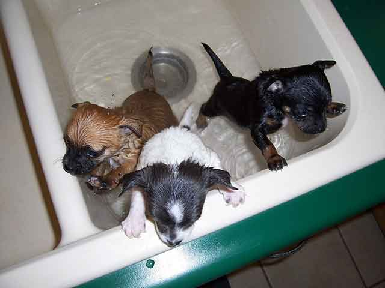
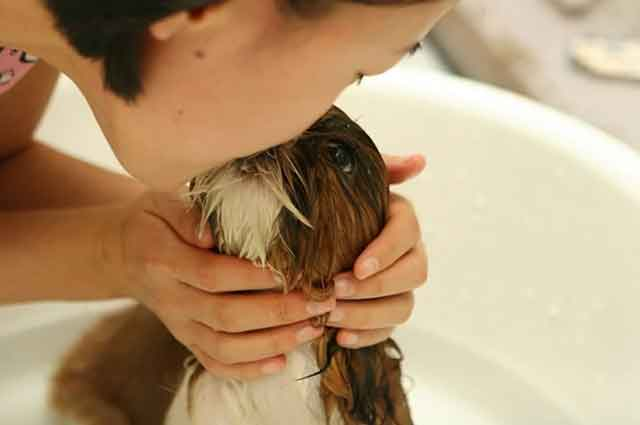

강아지가 몸을 터는 이유
강아지와 함께 생활하다 보면 간혹 이해되지 않는 행동을 할 때가 있습니다. 그중 하나가 바로 갑작스럽게 몸을 터는 행동을 보이는 것인데요. 그럴 때 마다 "갑자기 왜 터는 걸까?" 궁금하지 않으셨나요? 산책할 때도, 목욕할 때도 심지어 가만히 있다가도 몸을 터는 강아지! 그 이유에 대해서 함께 알아볼게요!
"젖은 몸을 털기 위해서"
모든 강아지는 목욕 후 몸을 텁니다. 몸에 젖은 물을 털어내는 것은 '생존'과 직결되었기 때문인데요. 강아지도 과거에는 야생에서 생활했었죠? 야생에서는 몸이 젖어 있는 상태가 아주 위험할 수 있다고 합니다. 천적이 나타났을 때 재빠르게 도망가야 하는데, 몸이 젖어 있다면 빠르게 도망갈 수 없겠죠. 그래서 강아지들은 몸에 물이 젖으면 재빨리 털어내는 습성을 갖고 있다고 합니다. 몸을 털면 약 70%의 물이 털어진다고 합니다.
"감정을 털기 위해서"
참 독특한 이유처럼 들리는 데요. 강아지는 감정을 느낀 후에 몸을 털어내는 습성이 있다고 하네요. 예를 들어 모르는 사람을 향해 심하게 지는 행동을 하거나 주인의 사랑을 충분히 느낀 다음에 몸을 터는 행동을 합니다. 즉, 싫은 상황을 피하기 위해서나 그런 감정에서 벗어나기 위함이 아닌 강렬한 자극이나 새로운 경험으로 인한 흥분을 침착하게 가라앉히기 위해 몸을 터는 행동을 합니다.

"몸에 붙은 이물질을 털기 위해서"
산책 후 집으로 들어가기 전 강아지가 몸을 터는 것을 볼 수 있는 데요. 이런 모습을 보이는 것 역시 야생의 모습과 관련이 깊습니다. 야생에서 생활했던 강아지는 털 곳곳에 진드기나 벌레가 붙기 쉬웠겠죠? 게다가 털을 씻어낼 방법이 없으니 자연스럽게 몸을 털어 몸에 붙은 각종 이물질을 털어낸다고 합니다.
"싫은 자극을 털기 위해서"
강아지 귀를 청소하다 보면, 면봉이 조금 깊숙이 들어갈 때 강아지가 귀를 포함한 몸을 심하게 터는 것을 볼 수 있는 데요. 강아지의 귀는 아주 민감한 신체 부위로 귀에서 느껴지는 자극을 벗어나고자 할 때 격렬하게 몸을 털곤 합니다. 귀를 깨끗이 닦아주거나 빗질을 해주면 시원함을 느낄 거라고 생각하지만 이런 행동은 오히려 강아지 처지에서는 그다지 반기는 일이 아닐 수 있습니다.
그 외에도 지나치게 몸을 터는 행동을 보인다면, 다른 질병이 생긴 것은 아닌지 귓속에 진드기나 기생충이 생긴 것은 아닌지 확인해 봐야 합니다. 게다가 귀를 계속해서 비비고 제자리에서 빙빙 도는 행동을 보인다면 귀를 자세히 들여다보는 진료도 필요합니다.
사람과 소통이 어려운 만큼 강아지의 행동을 자주 살피고 어떤 문제가 생긴 것은 아닌지 빠르게 조치할 필요가 있습니다. 그렇지 않다면 강아지만의 표현 방식이니 다양한 신호를 이해해 보시길 바랍니다!
[출처] 강아지가 몸을 터는 이유 ｜ 작성자 꽁치마루